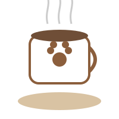

Café de gatos
Los cafés de gatos (猫カフェ, neko cafe) son un tipo de cafetería donde los clientes pueden jugar con gatos que deambulan libremente por el local.
Para más información

Somos una cafetería comprometida con despertar tus sentidos a través del aroma y el sabor del café premium, ademas te ofrecemos una alta gama de emparedados y postres exquisitos para que disfrutes de una experiencia gastronómica única.
En nuestro espacio combinamos granos seleccionados y postres exquisitos con un ambiente acogedor para ofrecerte el refugio perfecto donde trabajar, leer o compartir momentos inolvidables, ademas te ofrecemos momentos relajantes con nuestra variedad de gatos y un salon de juegos para que los mas pequeños se divientan con nuestros mininos
Nuestra misión es garantizar la calidad de nuestros productos y el servicio excepcional a nuestros clientes.
Es indispensable para nosotros ofrecer una experiencia memorable a cada uno de nuestros clientes.
Ofrecemos un espacio acogedor donde puedes relajarte y hacer tus tareas; o bien, compartir momentos inolvidables con amigos y familiares.
una amplia selección de cafés premium.
Contamos con una variedad de emparedados y postres exquisitos.
Los cafés de gatos (猫カフェ, neko cafe) son un tipo de cafetería donde los clientes pueden jugar con gatos que deambulan libremente por el local.
Para más información